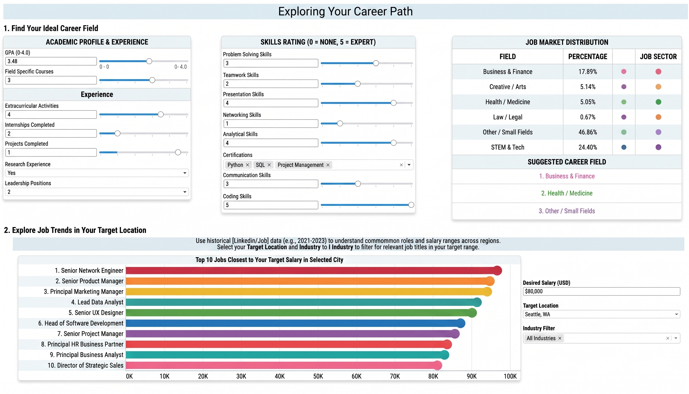
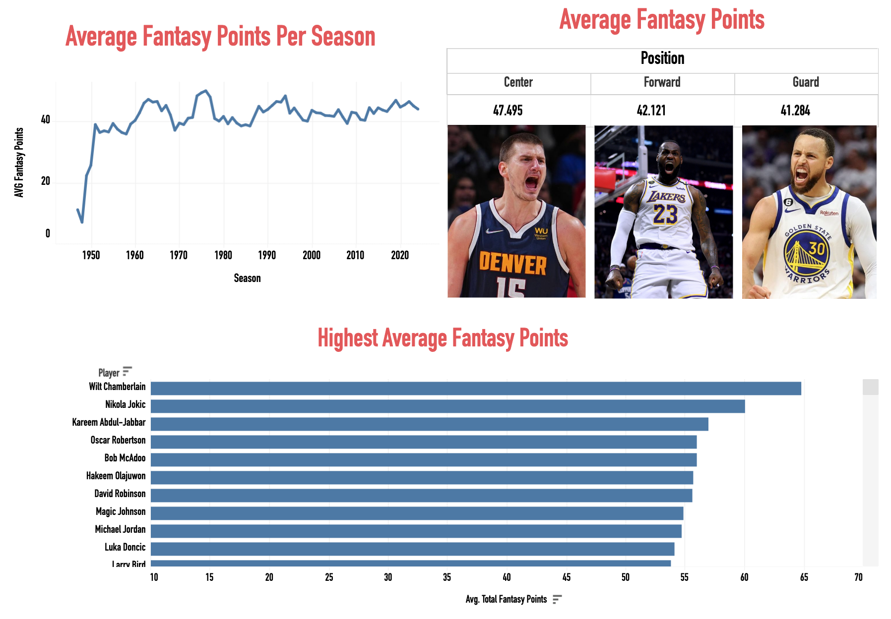
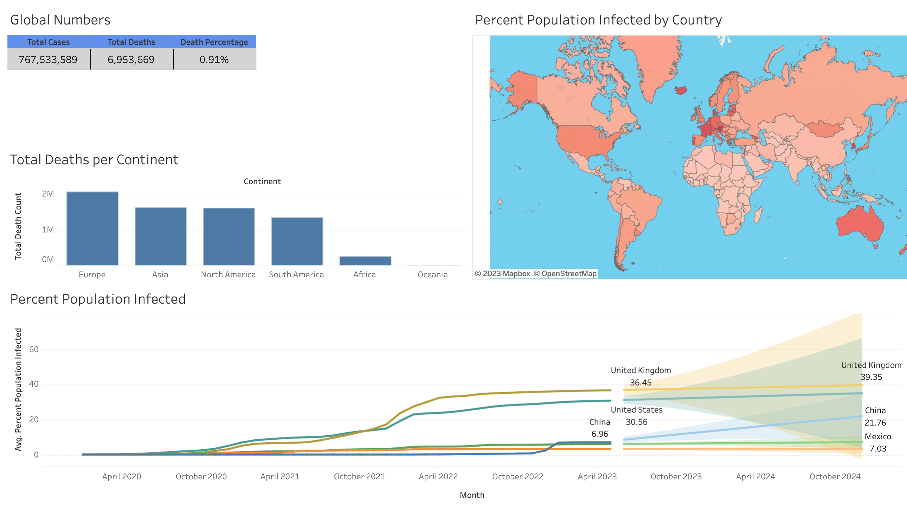

Enterprise Causal Inference Framework
Developed a machine learning targeting framework at American Express to optimize commercial marketing spend. Built automated data pipelines on GCP using Python and SQL to process enterprise-scale, highly regulated datasets. Implemented an EconML causal inference architecture to isolate true incremental lift and mitigate legacy targeting bias, projecting a 15% lift in net response rates.
Spatial Machine Learning for U.S. Real Estate
Engineered a predictive pipeline benchmarking five econometric architectures to evaluate geographic feature multicollinearity. Built a Spatial Autoregressive (SAR) framework utilizing a K-5 nearest neighbor weights matrix to isolate geographic price contagion, achieving an out-of-sample R-squared of 0.72 and 2.02% MAPE.
Predictive Career Recommendation System

Trained a scikit-learn Random Forest model on mixed demographic and live labor-market data, optimizing for feature interpretability. Deployed the model into an interactive Tableau dashboard via TabPy, enabling real-time algorithmic scoring based on user-adjusted salary, location, and skill parameters.
Leveraged Python for data analysis and visualization to explore streaming content trends and viewer preferences across major platforms.

Analyzed NBA player stats using SQL and Tableau to build interactive dashboards mapping player performance against custom point systems.
Standardized date formats, filled missing addresses, and removed duplicates in a fictional real estate dataset using SQL queries.

Analyzed global data using SQL, mapping trends in infection rates and death percentages.